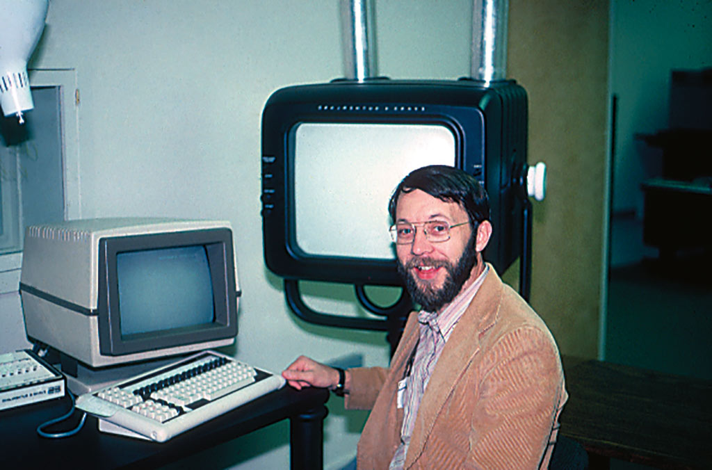
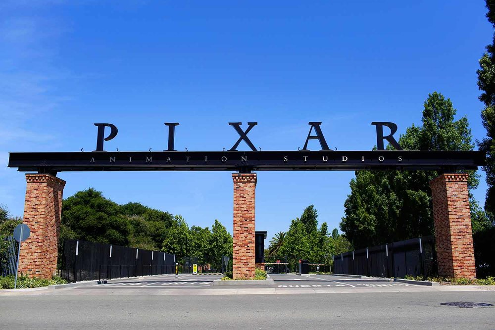

¿como empezo pixar?
A finales de la década de los setenta, George Lucas reclutó a un grupo de científicos de la computación, integrado por Alvy Ray Smith y Ed Catmull, actual presidente de Pixar y Walt Disney Animation Studios, para formar el área Graphics Group de Lucasfilm y crear efectos visuales para sus películas y software de animación para otras producciones. A ese equipo, pocos años después, se sumó John Lasseter, un joven animador que tenía la intención de realizar la primera película animada por computadora de la historia. El equipo creó un hardware con gran poder computacional capaz de crear imágenes de alta resolución, al que llamó Pixar Image Computer. Aunque esa división de Lucasfilms innovó con algunos de los usos digitales más revolucionarios para crear imágenes en aquel tiempo, a George Lucas no le interesaba la animación. Por eso, cuando en medio de una crisis financiera, Steve Jobs decidió comprar esa división de Lucasfilm, George Lucas no lo dudó.
Pixar siguió siendo un proveedor de servicios de software y hardware de alta gama. Pero ni tener a Disney como cliente, ni comprar software para acelerar el coloreado de sus animaciones, ni trabajar para superproducciones como Jurassic Park (Steven Spielberg, 1993), le dio a Pixar lo suficiente para sobrevivir. Estaban tan lejos del éxito comercial que Pixar Image Computer vendió menos de 300 unidades. Pero eso no impidió que el equipo siguiera produciendo cortos animados. Tin Toy (1998), la historia de un juguete que intenta escapar de un bebé aterrador, ganó el Oscar al Mejor Cortometraje en 1988. La idea de hacer un largometraje de una historia de juguetes empezaba a crecer con fuerza, pero sabían que necesitaban un estudio grande y poderoso, como Disney. En 1991 la sociedad era un hecho: Pixar produciría tres largometrajes de animación, el primero de los cuales sería Toy Story (dirigida por John Lasseter, 1995), y Disney se ocuparía de la distribución y el marketing. Mientras tanto, Pixar, en su lucha por no desaparecer, siguió ofreciendo servicios de software y trabajando en animaciones para comerciales. El estreno de Toy Story en 1995 representó la ansiada consolidación de Pixar como estudio de animación, así como un hito en la historia del cine. La primera película animada digitalmente en su totalidad también fue un éxito comercial al que siguieron muchos más.
estudios
Las primeras oficinas de Pixar se encontraban en San Rafael, California junto con Lucasfilm.170 A finales de 1990 el estudio se trasladó al Point Richmond Tech Center, en la ciudad de Richmond.28 La sede actual de los estudios de animación se encuentra en 1200 Park Avenue, Emeryville,228 e incluye el Steve Jobs Building171 y la Pixar Studio Store.167 Las oficinas del equipo a cargo del desarrollo de RenderMan se encuentran en Seattle, Washington.76
fundadores y creadores de pixar

stevejobs
Steve Jobs se había puesto al frente de la nueva empresa, pero queriendo desvincular el pasado de esta. Jobs quería destinarla a ser una firma informática. El producto estrella de la compañía era el Pixar Image Computer, un ordenador que tenía una enorme memoria gráfica para la época
Edwin Catmull
ED CATMULL es cofundador y presidente de Pixar Animation Studios y presidente de Disney Animation. Ha recibido cinco premios Oscar, entre ellos, uno a su trayectoria en el campo de la animación digital. Catmull se doctoró en ingeniería informática en la Universidad de Utah.
Alvy Ray Smith
es un científico informático estadounidense que cofundó la División de Computación de Lucasfilm y Pixar, participando en la expansión de la animación por computadora en los años ochenta y noventa al largometraje
John Lasseter
es un animador, director de cine y productor estadounidense. Es miembro fundador de los estudios Pixar, en donde supervisó todas las películas que produce este estudio de animación como productor ejecutivo